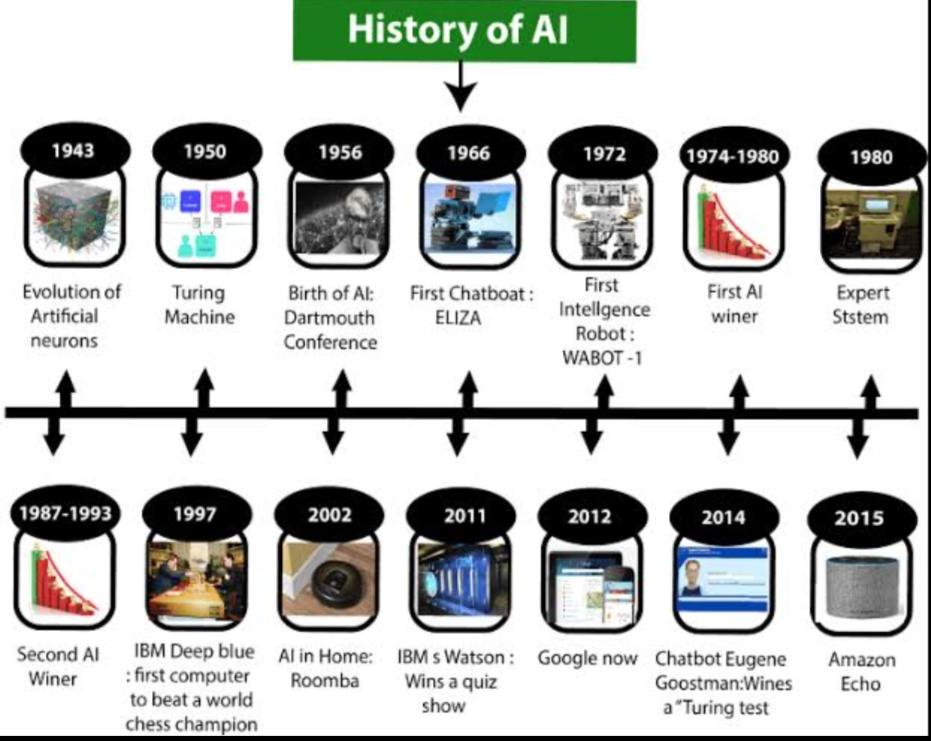

History of AI

- 1943:
Warren McCullough and Walter Pitts publish "A Logical Calculus of Ideas Immanent in Nervous Activity." The paper proposed the first mathematic model for building a neural network.
- 1949:
In his book The Organization of Behavior: A Neuropsychological Theory, Donald Hebb proposes the theory that neural pathways are created from experiences and that connections between neurons become stronger the more frequently they're used. Hebbian learning continues to be an important model in AI.
- 1958:
John McCarthy develops the AI programming language Lisp and publishes the paper "Programs with Common Sense." The paper proposed the hypothetical Advice Taker, a complete AI system with the ability to learn from experience as effectively as humans do.
- 1969:
The first successful expert systems are developed in DENDRAL, a XX program, and MYCIN, designed to diagnose blood infections, are created at Stanford.
- 1980:
Digital Equipment Corporations develops R1 (also known as XCON), the first successful commercial expert system. Designed to configure orders for new computer systems, R1 kicks off an investment boom in expert systems that will last for much of the decade, effectively ending the first "AI Winter."
- 1991:
U.S. forces deploy DART, an automated logistics planning and scheduling tool, during the Gulf War.
- 2011:
BM's Watson trounces the competition on Jeopardy!.
- 2016:
Google DeepMind's AlphaGo defeats world champion Go player Lee Sedol. The complexity of the ancient Chinese game was seen as a major hurdle to clear in AI.